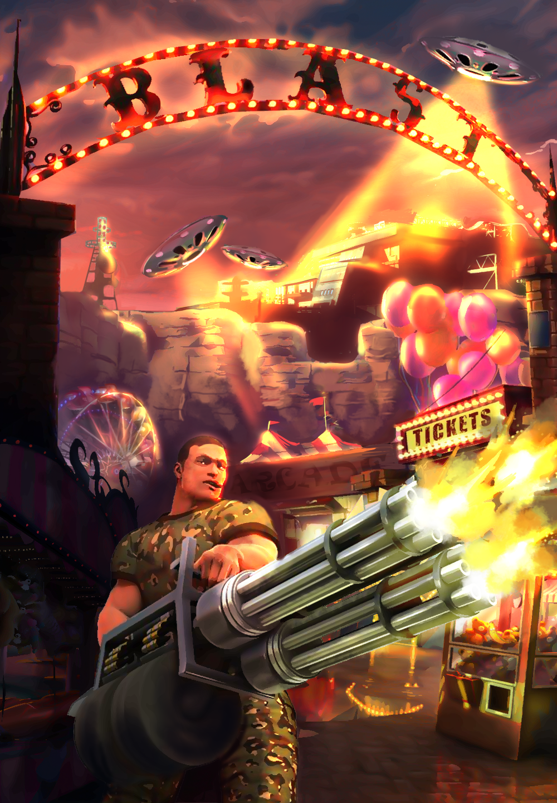
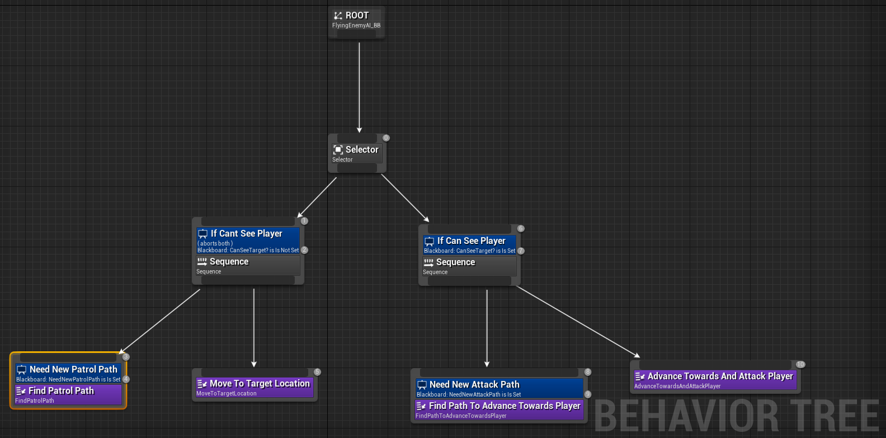
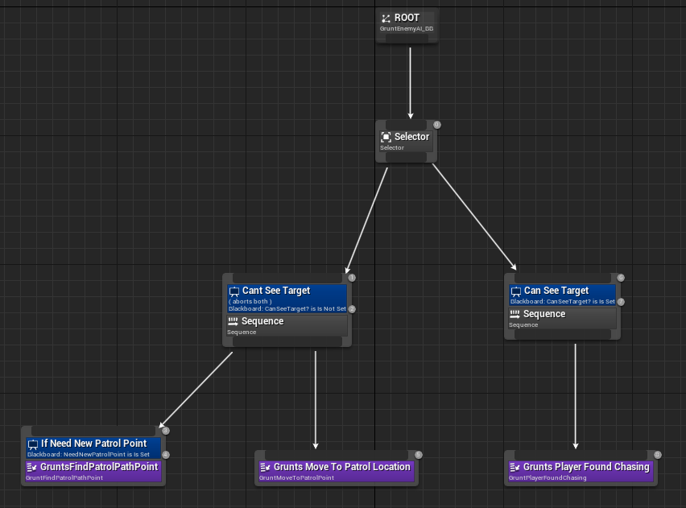

For this project me and my fellow seniors were tasked with completing a game within two semesters. We did have
the semester before our senior year to decided on what the game would be, but only two semester to actually create
the game. We ened up coming up with the concept for B.L.A.S.T. The idea for the game was quite simple really, the game
is essentially a combination of Doom's combat, Duke Nukem's comedy style and a movement system inspired by Titanfall.
We had very limited to no technical guidance on this project once we actually got started making it. Everything was
decided within our team without real interfearance from anyone else. We voted on the Leads for the project and
everyone got to give input on what they wanted to focus on for the game. For me, I initally ended up on the enemy
ai team. And after some time I also got onto our weapons team since they were in desperate need of some fresh minds.
We've been chugging along making the game ever since.
What is B.L.A.S.T?
As I mentioned before a very easy way to think of our game is imaging a conglomeration of Doom's gameplay, Duke Nukem's
comedy and Titanfall's movement system (minus the wall running). We really wanted to focus on the fast pace aspect of
our game. We never wanted a situation where the player was standing still. Further more we are shooting for a PvPvE, (
player vs player vs enemy) area style, first person shooter for a two player experience. The object being a point
based game, the first person to get to a certain number of points wins. To get points a player must start a
generator around the map, and pick up the point that comes out of it once the timer on it finishes. All the while
looking out for the enemies constantly attacking as well as the other player who might just be lurking around trying
to steal your generator point once it comes out. Everything we decide on is always done by asking the question,
"does this affect the players experience positively"?
My approach
Having started out only on the AI team, with just one other person, I worked a lot with Unreal's behavior tree and blackboard
systems. Using behavior tasks and behavior services to piece together AIs into something that functions as inteded.
The first short bit of work was just familiarizing myself with these systems so that I knew what I was doing when
we dove into making the AI for B.L.A.S.T. The decision was made early on that we would be using Unreal's C++ style
of development since blueprints only is not something we though would be as beneficial. If you're not familiar with
the problem that arises with Unreal's C++ then I should tell you there is very minimal documentation with this method.
So learning the in's and out's of Unreals behavior trees was not something that was as easy as googling something when
we hit a road block. We had to go through a lot of trial and error until we slowely pieced together how everything worked
with the help of some decent YouTube tutorials that we found along the way.
When my partner and I started work on the game's AI we thought it best to take a divid and conquer
approach to our work. We knew we had four enemies that were planned out for B.L.A.S.T and we decided that we would each
take two of them under our wing. The four for the game included the: Grunt, Flyer, Engineer and Suicider. The two
that I took under my wing along the way were the Grunt and the Flyer with the Flyer being the first of the two I
created.
When I started on the flyer I knew that there were some things that were already decided on for how the team wanted
it to behave. We wanted to flyer to have a very "jelly fish" like movement (meaning a kind of periodic force application
while it moves along it's path) that is hard to hit and have long range charge attacks. This results in it being
hard to hit while it moves, but also allowing a window of opportunity to shoot it while it's stopped for attacking.
I wanted to keep the behavior tree for the flyer as minimal as possible so that it was easier to read. For the
behavior tree I knew that I would need two main sides; one side for patroling and the other for attacking. This
is a very similar idea I applied to the behavior tree for the grunt AI as well. They both needed the same general
behaviors in terms of attacking and patrolling, however the tasks that each tree uses are entirely different in
how they work. And this different in the task is what makes each AI unique in how they behave.


(The image on the left is the Flyer's behavior tree and the one on the right is the Grunt's. Note: For the flyer,
I did adapt my own 3D volume made of grid cells that the is used for all of it's pathfinding)
To be able to see just how different each AI is, here are a couple short clips on both of them in actions:
(The left column depicts the flying AI and the right column depicts the grunt AI. Note: In all the clips
of the enemies, each of them have their "debug mode" turned on to make it easier to see just how their behaving.)
Along with the AI for B.L.A.S.T the other main area I've had a significant influence on is our weapons system.
I came onto the weapons team part way into the semester since our current weapons was in dire need of a
complete overhaul. My partner and I both completely redesigned our weapons system and in the process made it
into more of an inventory system that encapsulated our weapon system. The entire goal of our redesign was to be
as user friendly as possible. We wanted everything to be as easily adjustable as possible. We wanted to have an
inventory that can pickup anything that inherits from our custom Item type and decided what to do with it (this is
what I was responsible for writing, the Inventory system, however the entire system I helped re-write). That way
we could make all of our weapons derive from Item but it also leaves room to make other items down the line. We
wanted a work flow that was very short and simple for anyone on the team to use. We just wanted to put on the
custom Inventory Component and set one or two variables inside the component and it works perfect.
For the internal weapon system in the inventory, there had to be certain functionalities. These included:
1. Three weapon slots, one of which is dedicated to a default weapon that never runs out of ammo.
2. An enum class for each weapon slot so that we had a way to keep track of the active mod.
3. If an Item is picked up and is found to be a weapon it gets put into the first empty weapon slot (if there
is no empty weapon slot the weapon is just destroyed).
4. As the player shoots their weapon keep track of ammo and if the player runs out the weapon is removed.
5. After active weapon is deleted update active weapon to either slot 1 or 2 if either contains a weapon,
switch to default if not.
6. Fire, Release and Update methods that all call the active mod's version of those same methods.
To show off all of these different systems and functions at work, below is a short demo of all the above
functinoalities at work:
You can see how the inventory switches between weapons as they are picked up and as they run out of ammo.
The UI shows what the active mod is and how it changes on the fly based on what the inventory determins.
Challenges Faced and Things Learned
Even though the project isn't completed yet there have still been a lot of challenges and things that I've learned.
The largest challenge overall so far has been the lack of documentation on things that I've tried to do. It makes
things much harder when you have nothing to reference or arent sure how to get to a certain function you know
exists somewhere within Unreal. I've basically self taught myself everything in this project so far. All the
Unreal C++ has been completely self taught and as well as all the built in AI tools I've used for the game.
However, as everyone knows pushing through something that is difficult in the moment always makes you better at
that thing after the fact. Because I had to dig so hard on the things I had to teach myself that makes me all the
more knowledgable about those topics. Some of the things I've learned from this project so far include:
1. How to succeed within a large group environment.
2. A much better working understanding of version control, specifically Perforce and Git.
3. Unreal's built in AI tools: behavior tree's, tasks and services, making a task repeat until it acheives a certain
goal etc.
4. How to efficiently debug Unreal C++ code using breakpoints within Rider and Visual Studio.
5. Functional understanding of Unreal C++ and several different Unreal specific tasks within it's code.
6. Larger understanding of standard C++ and C++ practices.
While it's important to talk about the things that have been learned from this project, it's also very important
to talk about the challenges I've faced along the way that I had to overcome.
1. We had our version control (Perforce) go down for over 3 months right in the middle of our project. This
is something that was very costly to our project as it limited progress greatly. Though I didnt let it stop me
from making as much progress as I could with the systems I was working on as it gave me the opportunity to
re-write the inventory and weapon system from scratch so that when we did move the project over to Git I
didnt have nothing to show.
2. I had to re-write a our inventory and weapon code as we were all naive in making a multiplayer game so
all the code written for it was written like a single player game. This was a very large challenge for as it gave
me little time (less than 2 weeks) to learn and understand network programming in Unreal enough to take our
single player code and turn it into multiplayer code (this is a lesson I will remember for the rest of my life).
3. Another large challenge for me in this project is just how many hats I've worn over the course of the project.
I went from AI programmer, to inventory and weapon system designer/programmer, to network programmer, all while
also bouncing between all the rest of our teams providing any help possible. While at times this can become very
stressful and a lot to take in I think it is very rewarding as it sharpens my skills and knowledge more than
anyone else's and makes me comfortable in these kinds of roles and situtations.
How to check out the project?
Keep updated here and when we have a build of the game ready to show off I'll be sure to post that here
for you to play!


 You can see how the inventory switches between weapons as they are picked up and as they run out of ammo.
The UI shows what the active mod is and how it changes on the fly based on what the inventory determins.
You can see how the inventory switches between weapons as they are picked up and as they run out of ammo.
The UI shows what the active mod is and how it changes on the fly based on what the inventory determins.